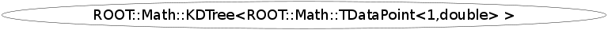

class ROOT::Math::KDTree<ROOT::Math::TDataPoint<1,double> >
This class is also known as (typedefs to this class)
ROOT::Math::KDTree<ROOT::Math::TDataPoint<1,double> >::KDTree<point_type>, ROOT::Math::KDTree<ROOT::Math::TDataPoint1D>Function Members (Methods)
public:
private:
| ROOT::Math::KDTree<ROOT::Math::TDataPoint<1,double> > | KDTree<ROOT::Math::TDataPoint<1,double> >() |
| ROOT::Math::KDTree<ROOT::Math::TDataPoint<1,double> > | KDTree<ROOT::Math::TDataPoint<1,double> >(const ROOT::Math::KDTree<ROOT::Math::TDataPoint<1,double> >::KDTree<point_type>&) |
| ROOT::Math::KDTree<ROOT::Math::TDataPoint<1,double> >::KDTree<point_type>& | operator=(const ROOT::Math::KDTree<ROOT::Math::TDataPoint<1,double> >::KDTree<point_type>&) |
Data Members
private:
| Double_t | fBucketSize | |
| ROOT::Math::KDTree<ROOT::Math::TDataPoint<1,double> >::BaseNode* | fHead | |
| Bool_t | fIsFrozen |
Class Charts
{kind=link}
{kind=link}
{kind=link}
{kind=link}

Function documentation
void GetClosestPoints(const ROOT::Math::TDataPoint<1,double>& rRef, UInt_t nPoints, vector<std::pair<const ROOT::Math::TDataPoint<1,double>*,Double_t> >& vFoundPoints) const
void GetPointsWithinDist(const ROOT::Math::TDataPoint<1,double>& rRef, ROOT::Math::KDTree<ROOT::Math::TDataPoint<1,double> >::value_type fDist, vector<const ROOT::Math::TDataPoint<1,double>*>& vFoundPoints) const
Bool_t Insert(const ROOT::Math::KDTree<ROOT::Math::TDataPoint<1,double> >::point_type& rData)
void Print(int iRow = 0)
BaseNode& operator=(const ROOT::Math::KDTree<ROOT::Math::TDataPoint<1,double> >::KDTree<point_type>& )
{return *this;}void SetSplitOption(ROOT::Math::KDTree<ROOT::Math::TDataPoint<1,double> >::eSplitOption opt)
{fSplitOption = opt;}iterator End()
const iterator End() const
const Bin* FindBin(const ROOT::Math::KDTree<ROOT::Math::TDataPoint<1,double> >::point_type& rPoint) const
{return fHead->FindNode(rPoint);}iterator First()
const iterator First() const
void Freeze()
KDTree<_DataPoint>* GetFrozenCopy()
Double_t GetTotalSumw() const
Double_t GetTotalSumw2() const
iterator Last()
const iterator Last() const
void Reset()